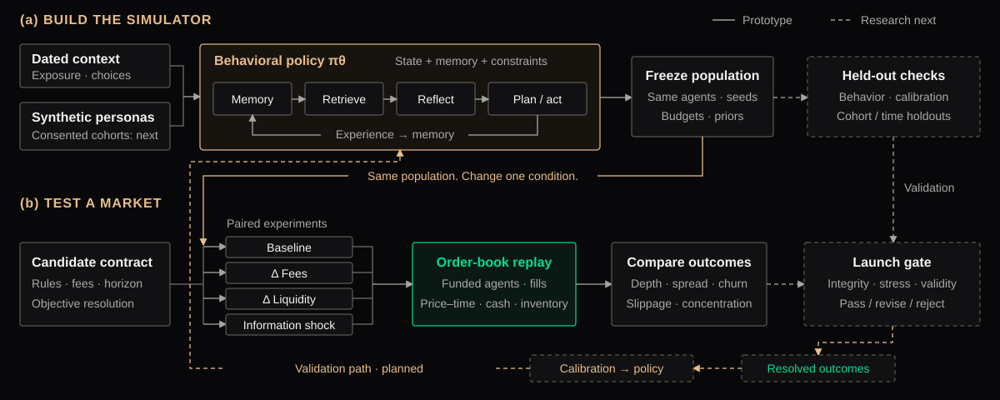

Observed context
Time-stamped content, audience signals, market state.
Simulate the behavior.
Test the mechanism.
Learn from what resolves.
Backer connects a laboratory for human decisions with a market that records them. Each product starts as an experiment; each resolved outcome can sharpen the next one.
Defensibility compounds when context → belief → action → outcome becomes one traceable record.

Time-stamped content, audience signals, market state.
Interests, attention budget, risk preference, cash and positions.
Synthetic profiles today.
Consented behavioral grounding is the next validation layer.
Experience returns to memory. Finite resources make decisions costly.
50-agent cognition rooms with memory, planning and paired scenarios. A separate 5,000-profile synthetic laboratory models price-time order matching and fee-sensitive policies.
Prototype evidenceSame population. Same random seed. One design change.
A reference run with heterogeneous beliefs and funded buyers and sellers.
This compact illustration runs locally. Its outputs demonstrate mechanisms, not forecast accuracy or expected returns.
Conserve collateral and inventory. Test fees, partial fills, liquidity withdrawal and concentration.
Compare held-out behavior, alternative agent policies and repeated seeds. Preserve disagreement.
Lock forecasts before outcomes. Measure Brier score and calibration on future, unseen cohorts.
Score memories by recency, importance and semantic relevance. Reflection compresses experience into beliefs; planning converts beliefs into actions under resource constraints.
R(m) = wᵣ recency + wᵢ importance + wₛ relevanceFor each seed, replay the same population under control and treatment. The paired difference isolates the modeled rule change. Repeat across seeds and agent assumptions.
Δₛ = metric(treatment, s) − metric(control, s)Use time-separated and creator-disjoint holdouts. Compare against simple baselines. Score only externally observed outcomes; abstain when data or cohort coverage is insufficient.
Brier = mean[(pᵢ − yᵢ)²], yᵢ ∈ {0,1}Agent simulations test conditional hypotheses. A simulated intervention is not a measured real-world causal effect. Market prices remain sensitive to liquidity, risk and selection.
Investors express a view on a milestone, a relative outcome or a continuing trajectory. The target business earns execution fees; participating profiles can share in collected fees.
Built: simulation and trading prototypes. Next: an opted-in forecasting pilot. Target: fee-generating execution and creator royalties.
A metric, threshold, deadline and resolution source are fixed before the first order. YES pays $1 if the condition resolves true; otherwise $0.
Sell into available liquidity at a higher price, or hold a correct view to settlement. A losing view loses the entry cost plus fees.
A contracted share of collected trading fees. Creator earnings are separate from who wins the contract.
Retain trading fees after creator royalties and liquidity incentives. Rates are a product-design variable.
Identity, metric, deadline, source and dispute rules.
contract_idAvailable balance, exposure limits, eligibility, self-trade controls.
reserved_balancePrice-time priority, partial fills, cancel/replace, explicit fees.
order → fillAtomic positions, cash movements, fees and creator accruals.
append-only ledgerExternal evidence, dispute window, final result and redemption.
outcome → payoutThe simulator informs product design. A precommitted external metric determines the payout, with fallback and void rules for missing or disputed data.
Evidence → challenge → finalityBinary contracts transfer funded value between participants. Trading fees pay the platform and any agreed creator or liquidity share.
Capital appreciation and settlement are alternative exits from the same position. Royalties are an allocation of fees, never an extra settlement claim.
Assumption: 1% fee on each executed trade’s consideration; no redemption fee. This is an accounting illustration, not a published fee schedule.
Each complete YES/NO pair is backed by $1. Trades transfer claims; fees are separate cash entries. A matched fill and its position, balance and fee updates must commit atomically.
P&L = exit value − entry cost − trading feesA consenting profile receives a pre-agreed fee share; a PK market can allocate that share between both profiles. Block creator and affiliate trading in their own outcomes. Verify identity and detect wash activity.
royalty = eligible collected fees × agreed shareContinuous exposure requires a robust index, margin, funding, liquidation and loss-absorption rules. Funding links the traded price to the index and transfers between longs and shorts; it is not automatically platform revenue.
P&L = signed quantity × Δcontract price − net funding − feesCurrent executable Backer flows use fictional profiles and simulated credits. Real-money execution, creator royalty contracts and perpetual markets are future product layers.
The market produces decisions under constraints. The lab turns those decisions and their outcomes into better experiments. Trading fees fund the next iteration.
Simulation → selected rules → opted-in pilot → prospective evaluation → launch decision → monitored operation
Attach consent scope, timestamps, model version, execution conditions and source provenance. Keep predicted beliefs separate from observed behavior and resolved truth.
Public profiles are easy to copy. A prospective history of elicited forecasts, observed commitments and independently verified outcomes takes repeated participation and time.
Outcome labels reveal where a model fails: a cohort, a time horizon, a liquidity regime. Targeted corrections are more useful than collecting more unlabeled activity.
Stress-tested rules can reduce poor fills and ambiguous settlement. Better market quality can earn repeat participation and more useful observations.
Fee sharing can attract participating creators and their audiences. Legitimate execution generates fees that fund market operations and research.
Volume counts executed consideration once, not both counterparties or $1 face value. This aggregate fee rate is separate from the experiment’s per-side rate. Shares allocate the same fee pool. No volume or revenue forecast is implied.
*Assumed 0.15% of traded consideration for processing, data and operations. Fixed research, personnel and compliance costs are excluded. Positive contribution is not net profit.
Paid simulation studies and research APIs can monetize decision support for teams testing content, audiences and incentives. Their results feed the same evidence discipline; this is a planned revenue line.
More activity creates an opportunity to learn.
Verified outcomes make that learning testable.